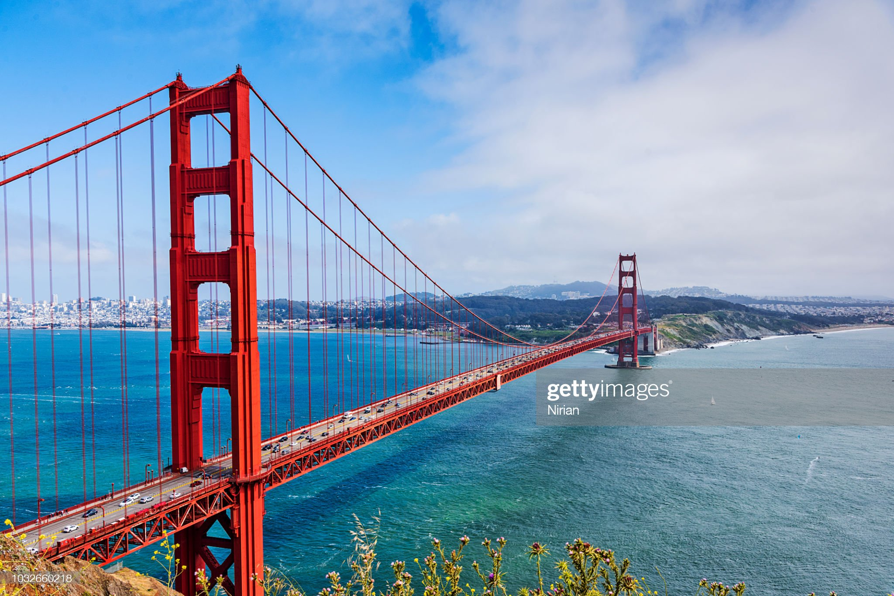
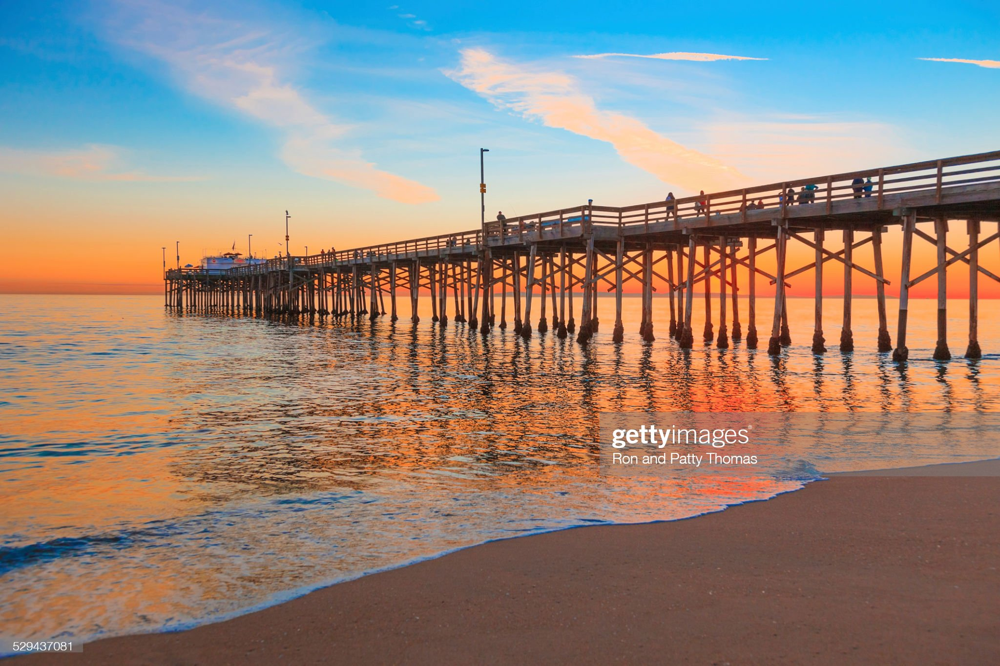

By Julia Jacobo
March 21, 2023, 5:59 AM
Amid extreme climate and natural disasters, is California still a desirable place to live and vacation? Experts weigh in.
Earthquakes, snow, wildfires, flooding, smog, fog, heat, drought -- these are just some of extreme natural disasters and climate conditions experienced in the Golden State in any given year.
California is notoriously the "land of extremes," Kristina Dahl, senior climate scientist at the Union of Concerned Scientists, told ABC News. Snowpack from the winter could quickly melt into flooding come spring. Heat waves in the summer pave the way for wildfires in the fall. Now, intense moisture from atmospheric rivers is walloping the West Coast with an inundation of precipitation -- oftentimes too much at once. A pervasive megadrought has been plaguing the region for decades and to top it off, tectonic shifts could cause an earthquake at almost any given moment.
Despite the constant risk and rotation of natural disasters, California remains a desirable place to live and vacation, experts told ABC News.
California has experienced a population boom in the past decade, despite the plethora of extreme weather in recent years, according to experts.
The high cost of living in California is indicative of the desirability of living there, Michael Lens, an associate professor of urban planning and public policy at the University of California, Los Angeles, told ABC News.
The high cost of living, which as "accelerated beyond of a lot of people's needs," may be driving some Californians to relocate to adjacent states like Oregon or Arizona, or even Texas, Lens said. But it is not detracting a vast majority of people from remaining or moving to the state.
"That's certainly part of why the cost of living is so high -- we like living there," said Lens, who lives in Los Angeles.
This is especially true in the desirable coastal cities, such as San Francisco and Los Angeles, but also further inland, where it's almost impossible to buy a starter home for less than $500,000, even $1 million in some markets, Lens said.
It's easy to look around and question whether continuing to live in California is the best idea as the extreme weather events are occurring, Lens said. But once the sky clears, so do those fleeting moments of uncertainty.
"When California shines it really shines," Dahl said.
In the aftermath of the Tubbs Fire in 2017, one of the most devastating fires that burned through more than 36,000 acres and destroyed thousands of structures in Napa, California, home prices rose 21% in fire-ravaged areas and 33% for homes outside fire zones, according to a study conducted by real estate company Redfin in 2021.
California is not the only place in the world experiencing an increase in extreme weather, Dahl said, adding that people will need to weigh what sorts of risk they are willing to live in.
"Almost anywhere you go in the United States going forward, you’re going to be contending with some form of climate change" -- things like increased wildfires, increased smoke from wildfires, extreme flooding, or longer, intense seasons of extreme heat, Dahl said. "There’s no corner of the country that will be untouched by climate change. It's a matter of picking your poison."
"It's also a land of incredible opportunity and incredible beauty," she said. "In many ways, as a climate scientist living in these extreme climate impacts, it helps to motivate my work...It's why I'm working so hard to advocate for climate action."
A road running parallel to the Pacific Ocean in Big Sur, California.
A view of the Golden Gate Bridge in San Francisco, California.
Incoming tide reflects the sunsent at Balboa Pier in Newport Beach, California.
Here is a comparison of Journey's End mobile home park during the Tubbs fire in Santa Rosa, California, Monday morning, Oct. 9, 2017, on the left. On the right is what Journey's End looked like nearly a year later, on Sept. 25, 2018.
The extreme weather in California may be exacerbated by climate change, but the state, and its tourism industry, are "as wonderful as it's ever been," Mechelle Best, dean of the College of Health and Human Development and professor in recreation and tourism management at California State University, Northridge, told ABC News.
"Extreme weather is happening all over the planet, but California, I think, remains attractive," Best said.
California, like the rest of the U.S., has been impacted by climate-driven extreme weather, Visit California President and CEO Caroline Beteta said in a statement to ABC News via email. But although the state may experience some isolated disruptions in the mountains and central coast due to recent winter storms, the heavy snow pack will prove beneficial for ski resorts along the Sierra Nevada mountain range and will likely alleviate dwindling water levels in reservoirs throughout the state, Betata said.
Extreme weather is happening all over the planet, but California, I think, remains attractive.
— Mechelle Best, dean of the College of Health and Human Development at California State University, Northridge.
Recent bouts of wildfire, snowstorms and atmospheric rivers have not stopped people from traveling to California in the past year, the experts said. People are confident that, even after weeks of inclement weather, the state will eventually get "back to normal," and therefore any disruptions in travelers will only be temporary, Best said.
Even recurring events, such as wildfire season or the wet season, aren't enough to deter visitors from flocking to the state, Best said.
"The reasons for people moving to California and visiting California will remain the same," Best said. "Our weather will still be great. The entertainment will still be wonderful. The range of activities and opportunities that are available across the state just continue to expand every day. And then, of course, there's the allure of Hollywood, of film, that will still attract people to the state in pretty large numbers."
In addition, California covers such a large swath of land that even if one region in the state is experiencing inclement weather, there are likely plenty of other places available to exhibit hospitable conditions for recreating, Best said.
Tourists traveling to California have been steadily increasing since 2020, according to Visit California. People are more eager to travel now that it's been three years since the beginning of the COVID-19 pandemic, Best said.
Visitor spending is expected to exceed the pre-pandemic peak sometime in 2023, and numbers of international travelers, particularly from the Pacific Rim, will likely rebound as well this year, Betata said. Domestic travelers in California are already back to pre-pandemic levels, according to Visit California.
"Visit California research continues to show a strong desire among travel consumers to enjoy the Golden State’s multitude of tourism experiences, its diversity and welcoming, free-spirited ethos," Beteta said.
California also remains a top destination for both domestic and international tourists.